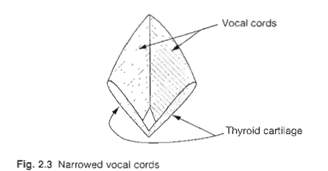

As air is pushed out from the lungs, it moves up the trachea into the larynx. In the larynx the airflow encounters the vocal cords. The vocal cords are actually two folds of tissue, but when visualized from above (as in laryngeal examination) they appear as white cords surrounded by pinkish areas (hence the popular term ‘vocal cords'). These flaps run from the arytenoid cartilages in the back to a point on the inner surface of the thyroid cartilage in the front. When the vocal cords are apart, as in Figure 2.2 (which shows an open glottis). then the air passes through unhindered. resulting in what is known as a voiceless sound.

Note: In this and subsequent figures showing states of the glottis the bottom of the diagram corresponds to the front or the larynx. Note that all the figures in this chapter are schematic rather than anatomically accurate representations, such as in the initial and final sounds in the word 'pass’ (Since English orthography is not a system of phonetic representation, a single sound may be represented by more than one orthographic symbol. as in the final sound in ‘pass’.) Lying above the true vocal folds are the false folds. The false vocal folds can also be set into vibration to produce some sounds, such as with a cough, but are not normally associated with speech production. The thyroid cartilage, at the front of the larynx. causes the protrusion known as the Adam's apple in the front of the throat. If however the vocal cords are brought together by muscular contractions, as in Figure 2.3 (which shows a narrowed glottis), then as the air is forced through. air pressure causes the vocal cords to vibrate. This vibration (voicing) is maintained by aerodynamic and elastic forces until movement of the arytenoid cartilages separates the vocal cords. (This is a simplification of the complexities involved in the production of voicing; the reader interested in greater detail should consult one of the works listed in the Further Reading section at the end of this chapter.)
This vibration results in a voiced sound. as in all three sounds in ‘buzz'. You can feel (as well as hear) the difference between voiceless and voiced sounds by placing your finger against your Adam's apple and then making prolonged ‘sss' (as in ‘hiss') and ‘zzz' (as in ‘his') sounds: for the ‘zzz’ sound you should be able to feel the vibration of the narrowed vocal cords, while ‘sss' the vocal cords are wide apart and there is no such vibration. These two positions — open and narrowed — are the most common in the languages of the world, but the vocal cords may take on a number of other configurations which can be exploited by languages. For instance, they may be completely closed (see Figure 2.4). not allowing air to pass through at all and thus causing a build-up of pressure below the vocal cords: when they are opened. (he pressure is released with a forceful outrush of air (similar to a cough). The sound so produced is known as a glottal stop which is found in many kinds of British English — e.g. Cockney, Glasgow, Manchester. etc. — as the final sound of words like ‘what’. Alternatively, the vocal cords may be open only at one end, as in Figure 2.5, resulting in what are known as creaky voice sounds, found in languages such as Hausa (spoken in Nigeria). Imitating the sound of an unoiled door closing slowly involves creaky voice.

Finally, the vocal cords may be apart (much as for voiceless sounds), but the force of air may still cause some vibration. giving what are known as breathy voice or 'murmured- sounds. found in Hindi (spoken in India) or, for many speakers of English, in the of ' ahead'.